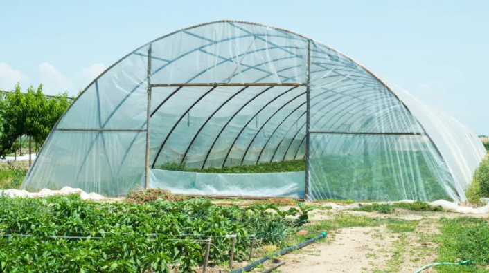
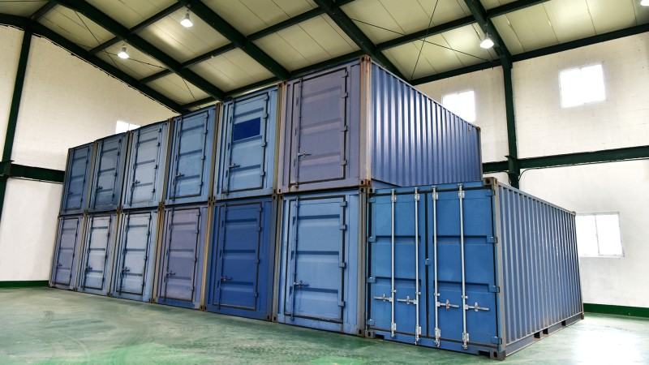
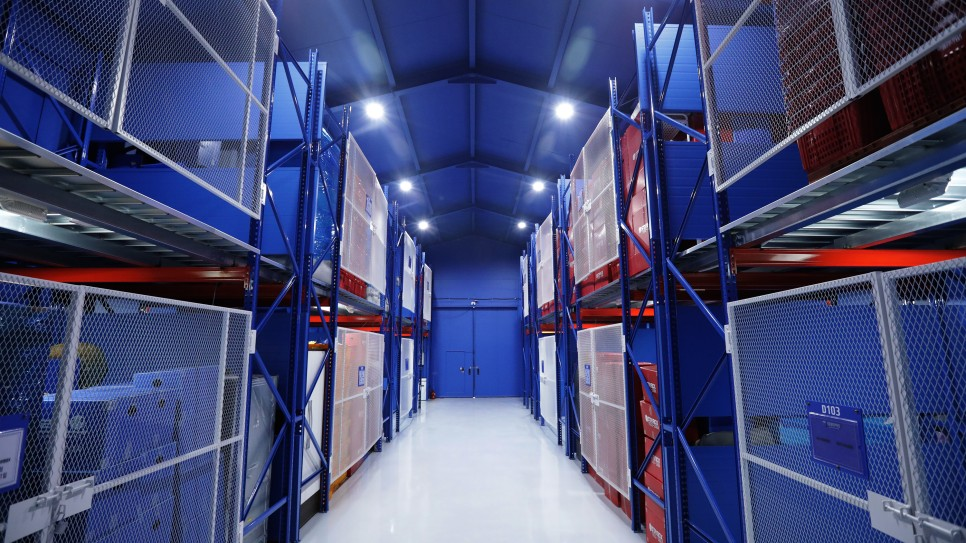

STEP 1
보관이사 비용이 달라지는 이유
보관이사 비용은 얼마인가요?
보관이사는 5톤 기준으로 260만 원, 이삿짐 보관 비용은 1일 기준 약 10,000원~ 별도로 발생합니다. 이사 나가는 날과 새집에 들어가는 날이 다르거나 인테리어 등으로 입주가 지연될 경우, 이삿짐을 보관하기 때문에 포장 이사보다 2배 비쌉니다.
비용이 달라지는 이유
① 이삿짐의 양(무게)
② 작업 인원수
③ 가전, 가구 분해 설치 등 특수 작업비용
④ 운반 방식
⑤ 날짜, 이동거리
⑥ 이삿짐 보관일, 보관 장소
일반 이사와 달리 보관이사는 짐을 보관해두기에 보관일에 따라 비용이 책정됩니다.
이삿짐 보관 장소 비교
| 구분 | 공공창고 또는 비닐하우스 | 컨테이너 보관 | 전용 보관 창고 |
|---|---|---|---|
 |
 |
 |
|
| 이삿짐 보관 비용 (1일, 1톤 기준) |
무료~4,000원 | 4,000~8,000원 | 5,000~10,000원 |
| 장점 | 저렴한 비용 | 온도, 습도 영향 적음 | 온도 습도 조절 가능, 가전제품 전기 연결 가능 |
| 단점 | 통풍 X, 온도 습도에 취약함 | 통풍 X | 가능 업체 수가 적음 |
| 추천 | 6개월 미만의 단기 보관 온도, 습도 영향 없는 물건 보관 |
단기 보관이사 | 장기 보관, 고가 물품 보관 |
업체마다 차이가 있을 수 있습니다.
STEP 2
보관이사의 특징
보관이사란?
집에서 나가는 날과 새집으로 들어가는 날이 다르거나, 인테리어 등으로 입주가 지연될 경우 사용하는 이사 방법으로 짐을 일정 기간 동안 보관하기에, 2번의 운반 과정과 이삿짐 보관 비용이 발생하여 포장이사 대비 약 2배 비쌉니다.

보관이사 비용 = 일반 포장 이사 비용 x 1.5 + 이삿짐 보관 비용(5T 기준 1일 10,000원~)
(업체마다 차이가 있을 수 있습니다.)
포장이사, 보관이사 비교
| 포장이사 | 보관이사 | |
|---|---|---|
| 이삿짐 포장 | O | O |
| 이삿짐 운반 | O | O |
| 이삿짐 정리 | O | O |
| 박스, 바구니 대여 | O | O |
| 짐 보관 | X | O |
| 2차 운반 | X | O |
| 2차 정리 | X | O |
| 특징 | 포장, 정리 모두 업체에서 진행 | 일정 기간동안 이삿짐 보관 가능 |
| 평균 가격대 (5톤 기준, 사다리차 별도) |
평균 130만 원 | 평균 260만 원 (이삿짐 보관 비용 별도) |